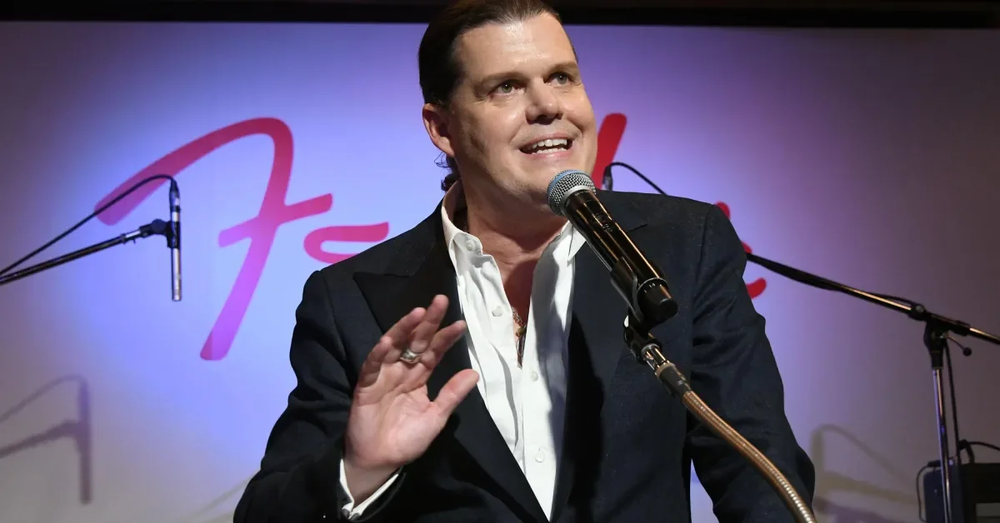

伊恩每日·科技：AI 时代的创作权、减速争论与机器人保洁
从 Fender CEO 的争议言论到艺术家版税方案，再到 Sam Altman 的减速呼吁，以及机器人保洁和菲尔兹奖背后的故事，伊恩带你梳理科技产业的今日脉搏。
把每天真正值得理解的事情，写成可以慢慢读的文章，也做成可以随时听的播客。

从 Fender CEO 的争议言论到艺术家版税方案，再到 Sam Altman 的减速呼吁，以及机器人保洁和菲尔兹奖背后的故事，伊恩带你梳理科技产业的今日脉搏。

从深圳中考补录到美国校园手机禁令，再到教师如何面对英雄的阴影——今天，我们聊聊规则、选择与成长。

本期节目聚焦中超联赛老将张稀哲、吴曦的出色表现，山东泰山力克上海海港的焦点战，以及利物浦在季前友谊赛中的上下半场反差，探讨老将价值、球队战术与新人成长。